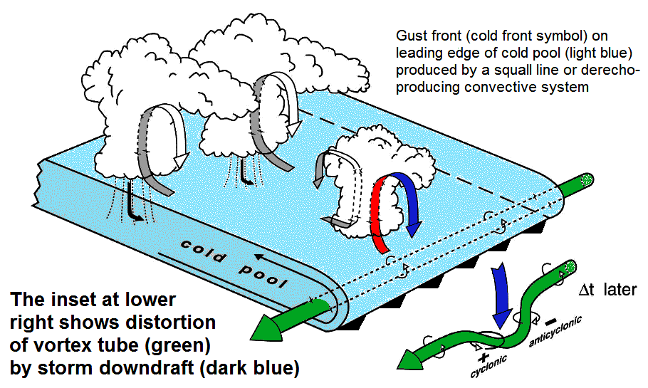
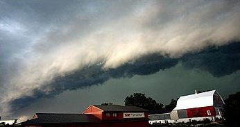
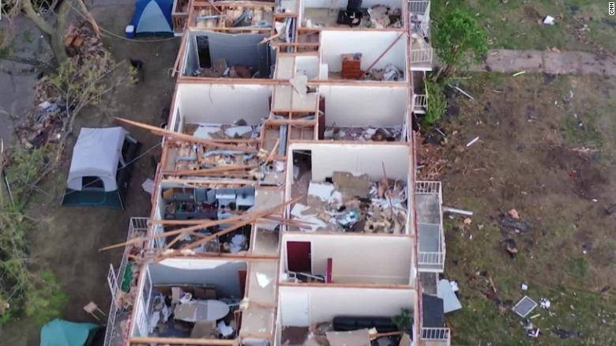

THE WEATHER TIMES
Issue 274, 02/08/89
THE INLAND STORM OF HORRORS; DERECHO'S
----------------------------------------------------------------------------------------------------------------------------------------------------------------------
HOW THEY ARE FORMED.

When lots of thunderstorms and rain activity combine in cold weathers.
They move in a straightish line towards the equator. Derecho's are
very rare and only occur in some places.
They form in low areas and flat places (eg. Iowa) and are composed
of lots thunderstorms and tornadoes. They cause huge damage and
run right through diffrent states due to their composistion in less
then a week. See diagram for refrence.
-----------------------------------------------------------------------------------------------------------------------------


DERECHO'S THROUGH THE AGES
Derecho's may not be well known but there have been many through the
ages. A few include the; August 10, 2020 derecho, September 2, 2019,
June 28, 2018, June 11, 2017, June 30, 2014 and more.
-------------------------------------------------------------------------------
THE WORD
Derecho comes from the Spanish adjective for "straight" (or "direct"), in contrast with a tornado which is a "twisted" wind. The word was first used in the American Meteorological Journal in 1888 by Gustavus Detlef Hinrichs in a paper describing the phenomenon and based on a significant derecho event that crossed Iowa on 31 July 1877.
----------------------------------------------------------------------------------------------------------------------------------------------------------------------
SEVERITY
Many factors contribute to the creation of a derecho. Large winds, flast terrain and lots of thunderstorms in one area. The humidity has to be certain level for the derecho to form, and as they are very rare it takes quite a lot of diffrent things to make one. Wind speeds, winds must grow to about 100mph. Humidity must be at or above the level required for a thunderstorm. Flat area, because Iowa is very flat the derecho could form and move across it without restriction. Pure chance really, a derecho can happen at any time as long as the area is flat and the humidity is right, it's just matter of if they can work togather and make a derecho
----------------------------------------------------------------------------------------------------------------------------------------------------------------------
CLASSIFICATION
Serial derecho – This type of derecho is usually associated with a very deep low.
Single-bow – A very large bow echo around or upwards of 400 km (250 miles) long.
This type of serial derecho is less common than the multi-bow kind.
An example of a single-bow serial derecho is the derecho that occurred in
association with the October 2010 North American storm complex.
Multi-bow – Multiple bow derechos are embedded in a large squall line typically
around 400 km (250 miles) long. One example of a multi-bow serial derecho is a derecho
that occurred during the 1993 Storm of the Century in Florida. Because of
embedded supercells, tornadoes can spin out of these types of derechos.
This is a much more common type of serial derecho than the single-bow kind.
Multi-bow serial derechos can be associated with line echo wave patterns (LEWPs) on weather radar.
Progressive derecho – A line of thunderstorms take the bow-shape and may travel
for hundreds of miles along stationary fronts. Examples of this include "Hurricane Elvis"
in 2003 and the Boundary Waters-Canadian Derecho of 4–5 July 1999. Tornado formation is less
common in a progressive than serial type.
Hybrid derecho – A derecho with characteristics of both a serial and progressive derecho.
Similar to serial derechos and progressive derechos, these types of derechos are associated
with a deep low, but are relatively small in size. An example is the Late-May 1998 tornado
outbreak and derecho that moved through the central Northern Plains and the Southern Great Lakes on 30–31 May 1998.
Low dewpoint derecho – A derecho that occurs in an environment of comparatively limited low-leve
moisture, with appreciable moisture confined to the mid-levels of the atmosphere.
Such derechos most often occur between late fall and early spring in association with strong low pressure systems.
Low dew point derechos are essentially organized bands of successive, dry downbursts. The Utah-Wyoming derecho of
31 May 1994 was an event of this type. It produced a 47 m/s (169 km/h; 91 kn; 105 mph) wind gust at Provo, Utah,
where sixteen people were injured, and removed part of the roof of the Saltair Pavilion on the Great Salt Lake.
Surface dew points along the path of the derecho were about 7–11°C or in the mid 40s to low 50s°F.
Derecho's can destroy and kill thousands in the few times there is one. They are known to be deadly and fast. It can sweep through 100's of miles in under two day's.
---------------------------------------------------------------------------------------------------------------------------------------------------------------------
IMPACT ON PEOPLE
In Iowa during the August 2020 derecho, wide-scale utility disruption and damage to electrical and telecommunications infrastructure occurred across the affected areas. Early guesses showed more than a million customers were left without power. Between August 10 and 13, total affected customers over the state was 1.9 million, with 1.4 million power surges, breaking down into 759,000 in Illinois, 585,000 in Iowa, 283,000 in Indiana, and 345,000 in other states across the mid-west.
On August 13, over 100,000 Illinois and 200,000 Iowa customers remained without power. The damage in that area was so extensive that Mid-American Energy had to send out linemen to rival power provider Alliant Energy to assist (Bold buisness move, I know). On August 23, thirteen days post-storm, Alliant Energy announced that 99% of their customers affected by the derecho had been restored to power.
Mediacom, a telecommunications company, reported an internet outage for 340,000 customers across multiple states in the affected area.
On the other side, plenty of residental and storm damage occured as well as electrical damage. The storm's winds caused wide-scale damage to plants, particularly trees, snapping large limbs, ripping off branches, and even felling or uprooting whole trees, often damaging homes and vehicles, as well as electrical and telecommunications (Mom! There is no internet! What? Humans survived without it at one point?! Nonsense! Get the internet working now!). Homes sustained significant damage to roofs ($), windows ($$), and siding ($$$).
Mental health took a dip as well as the economy. Familys greived and cried after beign hit not just with COVID-19 and protests, but a historic 100mph storm that killed thousands. Estimates say if Iowa does not recover there could be a 17 billion dollar loss in jobs and sales. Job count was down in urban districs by roughly 6.7%, and by approximately 8.5% in rural areas, a huge dip in what was otherwise a thriving state. The lack of comminication due to electrical shortages, cause many to go stir-crazy in their homes with what was already a pandemic, and now with out electricity.
---------------------------------------------------------------------------------------------------------------------------------------------------------------------
IMPACT ON THE ENVIROMENT
Many damgages to the enviroment are as follows: Storm damage to crops flooding rivers and lakes with pesticides. Mudslides due to heavy rain and wind. Flash flooding because of large amounts of storms in one area of the derecho. Wildlife populations pulmeted and food chains were disrupted. Forest fire were caused because of the lightning from the derecho's striking areas of bush and green life. Trees and such fell over in the harsh 100mph winds on houses and forests causing even more damage to the already weak enviroment.
TL;DR They were pretty screwed after the derecho hit them. Because of large damage to local wildlife and flora
---------------------------------------------------------------------------------------------------------------------------------------------------------------------
Problems that needed to be resolved urgently after the derecho.
Tons of trees, wires, and powercuts across the state needed to be resolved after the natural disaster. Forest fires cause by wires being knocked down had to be put out and landslides and wind damage had to be repaired. Emergency rooms were filled with paitents needing to be treated due to the destructive nature of the storm. A death count need to be taken. There are lots of isssues and problem the residents of Iowa had to face immediatly after the diseaster, I can only hope they will be more prepared next time.
---------------------------------------------------------------------------------------------------------------------------------------------------------------------
AID AGENCIES
Hospitals and ER's were filled to the brim. Lots of wounds and cuts needed to be treated and the hospitals flew out rescue helicopters and ambulences to help those paralyzed by the diesaester and get the to the hospital to be treated. The depratment of health was freaking out over the amount of people and response to alerts and lack of funding through the whole crisis. They asked the president himself for more money in order to help those trapped in buildings and those in remote areas. Labor had to come to the rescue by giving people back their jobs and giving buisness money to keep working, As many couldn't get to their jobs lots were fired and a reseccion happened with deflation of currency. Labor reacted swiftly by adding more jobs and requiring buisnesses to give 2 weeks of paid leave before firing.
---------------------------------------------------------------------------------------------------------------------------------------------------------------------
COMMUNITY RESPONSE
Neighbors and freinds helped to rebuild houses and treat the wounded, many of the state showed a "community kinship" and helped those in need while riskig their own lives. Donation centers were set up for people to drop of supplies for people caught in the destruction. One couple drove all the way across the state border to give supplies to those in a ruined apartment complex, showing the true binding people can show after a tramuatic event.
---------------------------------------------------------------------------------------------------------------------------------------------------------------------
LONG TERM EFFECTS
While thunderstorms have thunder to warn you of them coming, and hurricanes you have days, if not weeks, to prepare, derechos can strike in less then two hours, uprooting local wildlife and pushing rocks into water seservoirs and other long term damaging effects. While many people will be able to rebuild their homes with the emergency fund the Governer requested, much of nature and those without much money will have to migrate and move. But as with everything this has happened before and it'll happen again and nature will return it's balance. However the economics world suffered a big hit. Iowa entered a recession and money had to be given by the goverment to keep the econemy rolling, it was a realtivlly short natural diseaster but it had HUGE finacal impact. Iowa's corn market suffered a big hit and is down by at least 10% with crops destroyed and lack of demand. Because store and workplaces were closed the stock market also went down, by howmuch I cannot say, but articles say a good dip. Iowa's once thriving corn market will probaly take month to recover which will severly impact the average wealth of the state. Although the fincal side of things was most affected, plenty of people had houses and cars destroyed and couldn't afford to fix them, meaning some had to take out loans which they'd be paying out for years, others had to move some place else which is truly sad. Community moral also was effected long-term and became dreary and sad as people felt as if they'd been hit with a storm of death and the moral took quite some time to return to normal.
---------------------------------------------------------------------------------------------------------------------------------------------------------------------
LEARNING
All in all, this recent event brought to light the true destructive nature of the derecho and way they are nothing to scoff at. Many had never heard of a derecho before this happened, but now people will know how to prepare and help those with a derecho problem. Derecho's aren't the most famous storm, not the most powerful, but they are swift and deadly and can strike at any moment. I think people have learned that they should build their foundation and basements better as thi brought to light just how easy it is to destroy someones house with just pure coincidence of nature's side. Corn crop could not be soley depended on as the only export, they would have to plant more or not plant during the dercho season if they wish not to be put out of buisness. People could be more aware that a derecho could strike at any time and should therefore be more prepared, with better community response, funding, stock holding shifts, ect. I think people have learned their lesson on just how dangeours derechos can be...
---------------------------------------------------------------------------------------------------------------------------------------------------------------------
---------------------------------------------------------------------------------------------------------------------------------------------------------------------
-LIAM SOMMERFELDT, DERECHO NEWS